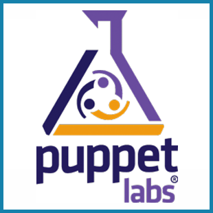
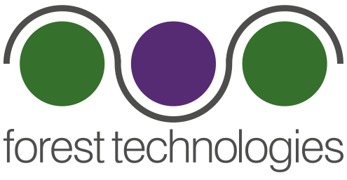

class: center, middle <img src="assets/images/singapore-2015-banner.png" width="100%" /> --- name: sponsors class: center, middle ## <strong><span style="font-family: arial;">Host Sponsor</span><strong> <img class="sponsor-host" src="../logos/thoughtworks.png" /> ## <strong><span style="font-family: arial">Gold Sponsors</span><strong> <img class="sponsor-gold" src="../logos/pivotal.png" />  <img class="sponsor-gold" src="../logos/datarobot.png" /> <br> <img class="sponsor-gold" src="../logos/ca.png" />  <img class="sponsor-gold" src="../logos/actifio.jpg" /> <img class="sponsor-gold" src="../logos/dynatrace.gif" /> ### <strong><span style="font-family: arial">Silver Sponsors</span><strong> <img class="sponsor-silver" src="../logos/redmart.png" /> <img class="sponsor-silver" src="../logos/xebia.jpg" /> <img class="sponsor-silver" src="../logos/redhat.png" /> <img class="sponsor-silver" src="../logos/paypal.png" /> <img class="sponsor-silver" src="../logos/zalora.png" /> <img class="sponsor-silver" src="../logos/microsoft.png" /> --- class: center, middle # Twitter ## @DevOpsDaysSG ## \#devopsdays --- name: program ## Friday | Time | Area | |:-----------------|:--------| | 09:15-09:45 | Keynote Life at REA Group - Lessons from 7 years of DevOps. (Trent Hornibrook) | | 09:45-09:55 | Sponsors | | 09:55-10:25 | How a payment processing company turned into a software release factory (Ankur Trivedi) | | 10:25-10:40 | Break | | 10:40-11:10 | Agile Service Provider Transformation (Kiran Inampudi) | | 11:10-11:20 | Sponsors | | 11:20-11:50 | Security and Continuous Delivery (Sriram "Ram" Narayanan & Prasanna K) | | **11:50-13:00** | **Catered Lunch** | --- name: program ## Friday (afternoon) | Time | Area | |:-----------------|:--------| | 13:00-13:30 | Ignites | | 13:30-13:45 | Open Space Opening | | 13:45-14:00 | Open Space Voting | | 14:00-15:00 | Open Space #1 | | **~15:00** | **Afternoon Snacks** in the food area | | 15:00-16:00 | Open Space #2 | | 16:00-16:45 | Open Space #3 | | 16:45-17:00 | Close Day & Logistics | | 17:00-19:00 | Evening Event | --- name: program ## Saturday | Time | Area | |:-----------------|:--------| | 08:00-09:00 | Venue, Breakfast, and Sponsor Booths Open | | 09:00-09:15 | Sponsors & Logistics | | 09:15-09:45 | Keynote State Of The 'DevOps' Union (John Willis) | | 09:45-09:55 | Sponsors | | 09:55-10:25 | Devops meets Functional Programming (Vladimir Kirillov) | | 10:25-10:40 | Break | | 10:40-11:10 | Scaling Elasticsearch, Logstash and Kibana (Angad Singh) | | 11:10-11:20 | Sponsors | | 11:20-11:50 | The Paradox of Progress (Jason K Jackson) | | **11:50-13:00** | **Catered Lunch** | --- name: program ## Saturday (afternoon) | Time | Area | |:-----------------|:--------| | 13:00-13:20 | Ignites | | 13:20-13:25 | Sponsors | | 13:25-13:30 | DevOpsDays Announcements | | 13:30-13:45 | Open Space Opening | | 13:45-14:00 | Open Space Voting | | 14:00-15:00 | Open Space #1 | | **~15:00** | **Afternoon Snacks** in the food area | | 15:00-16:00 | Open Space #2 | | 16:00-16:45 | Open Space #3 | | 16:45-17:00 | Close Day & Farewell | --- class: center, middle # Everybody ## Get ready for the group photo!